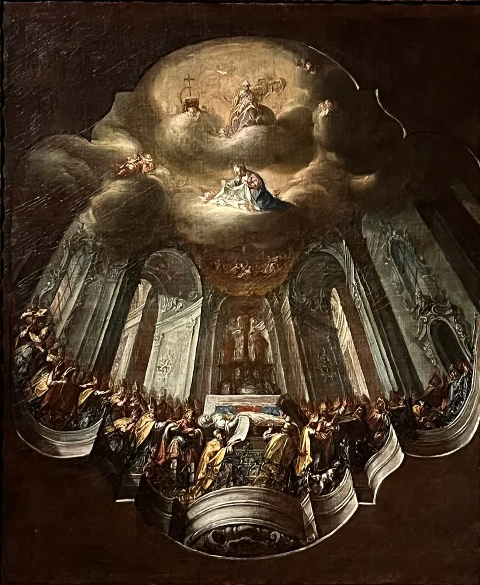
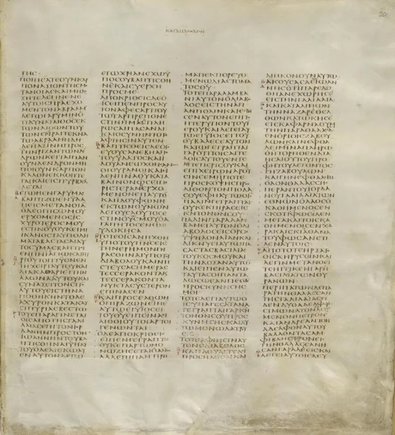
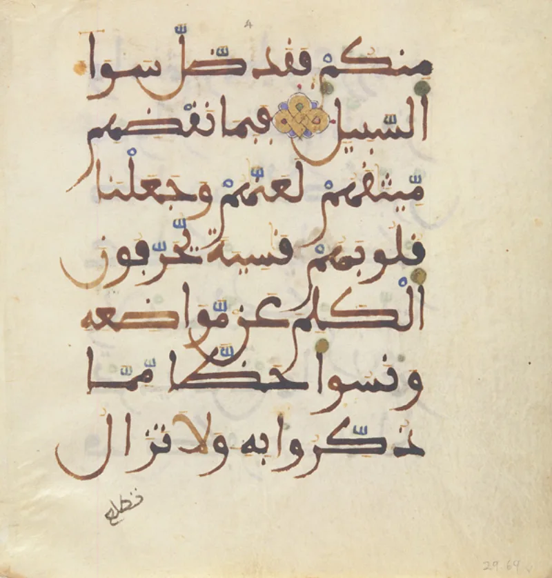

Muslim scholars have a real answer here. Say so before your friend does.
Quran 5:73 condemns those who say Allah is "the third of three" — in Arabic, thalithu thalatha. Quran 4:171 says plainly: do not say Three.
Three gods is tritheism. The church has always called it heresy.
The Athanasian formula is explicit: not three Gods, but one God. So the Quran here rejects something Christians also reject.
There are three replies, and they are not weak. Sidney Griffith notes that some Syriac Christians called Christ thlithaya, one of three.
So the phrase may echo real Arab Christian speech. IslamQA 243142 argues that worshipping three persons is in practice the same as three gods.
Shabir Ally adds that the one-essence defence is incoherent anyway, so refuting three is enough.
Even at its best it grants the observation. The Quran answers the Trinity only in a form Christians curse.
It never states the real claim: one divine Being, eternally three Persons. A Christian can fairly say his belief has not been addressed.
Genuinely arguable, and useful either way. It is not a knockout.
It is a way to be understood. Most Muslims have never heard the doctrine stated properly, and this is your chance.
"I agree with Quran 5:73 — God is not one of three. Can I tell you what we actually mean?"



They say Syriac Christians did call Christ one of three, and three is still three.
The strongest reply has three parts. First, 'third of three' may render Syriac Christian usage. Sidney Griffith notes that some Syriac texts call Christ thlithaya, one of three. So the Quran may echo real Arab Christian speech rather than misdescribe the doctrine.
Second, whatever the creeds say, worshipping three distinct persons looks in practice like three gods. IslamQA 243142 refuses the fine print and rejects the arithmetic at its root. Third, Shabir Ally argues that the verse targets what ordinary Christians effectively believed. He adds that the 'one essence' defence makes no sense anyway. So refuting three is enough.
Both sides have a case: use it to be understood, not to win.
If 'third of three' echoes a Syriac title of Christ, the phrase has a fair pedigree. And 'your maths is still three' is a blunt but coherent stance.
But the Muslim defence grants the core point. The Quran answers the Trinity only in a form Christians themselves curse. It never states the actual claim in order to answer it. A Christian can fairly say this: my belief has not been addressed, only a caricature beside it. The reply that this is deliberate shorthand is possible, but nothing supports it. It fits an author who knew Christianity only through popular report just as well.